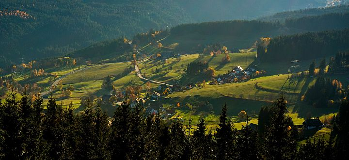
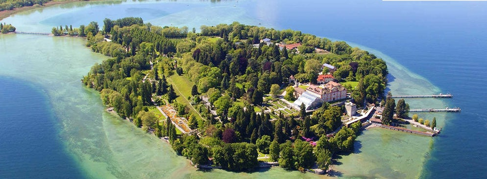

Wybrane atrakcje
Szwajcaria Saksońska - Bastei i twierdza Königstein
Wyniosłe baszty, majestatyczne bramy skalne, głębokie wąwozy i potężne, izolowane stoliwa. Jeden z najbardziej malowniczych krajobrazów Niemiec, podobny do naszych Gór Stołowych, znajduje się niecałe 100 km od granic Polski. Bajkowa kraina skał rozciąga się na pograniczu czesko-niemieckim na przestrzeni kilkudziesięciu kilometrów - chronią ją parki narodowe Sächsische Schweiz i České Švýcarsko. Ukształtowały ją procesy erozyjne, którym poddany został ten region w okresie kredy (145 - 65 mln lat temu). Szwajcaria Saksońska (zwana czasem Saską) to niezwykle popularny region turystyczny - wytyczono tu wiele szlaków i ścieżek (warto zwrócić uwagę na 112-kilometrową Drogę Malarzy czyli podróż śladami niemieckich romantyków, m.in. Caspara Davida Friedricha, zauroczonych okolicą), dróg wspinaczkowych, tras rowerowych i spływów statkami lub kajakami. Po stronie niemieckiej największymi atrakcjami są Bastei ("Baszty") - blisko 200-metrowe iglice górujące nad doliną Łaby oraz monumentalna, niezdobyta twierdza Königstein.
Drezno
To uważane za najpiękniejsze z niemieckich miast, nazywane "barokową Florencją", przetrwało II wojnę światową bez większych zniszczeń, aż do nocy z 13 na 14 lutego 1945 roku. W ciągu kilku zaledwie godzin zostało zmienione w dymiące pole gruzów. Po wojnie rozpoczęto pieczołowitą odbudowę najważniejszych zabytków miasta. Po zjednoczeniu Niemiec w 1989 roku prace te jeszcze bardziej zintensyfikowano i trzeba przyznać, że efekty są zadziwiające. Spacerując uliczkami Starego Miasta trudno uwierzyć, że to miejsce zostało tak ciężko doświadczone przez historię. Być może ma na to wpływ użycie do odbudowy łabskiego piaskowca, który wyjątkowo szybko i efektownie pokrywa się "patyną" dodającą autentyzmu wskrzeszanym budowlom...
Schwarzwald
Schwarzwald to rozciągający się na przestrzeni 160 km masyw górski w południowo-zachodnich Niemczech. Jego najwyższy sczyt Feldberg nie przekracza wysokości 1500 m n.p.m. Słynie z gęstych jodłowych lasów porastających jego zbocza. Tutaj również ma swoje źródła Dunaj, a w okolicy mieszczą się liczne uzdrowiska, z najbardziej znanym Baden-Baden.
Jezioro Bodeńskie i Wyspa Mainau
To jedno z największych jezior w Europie środkowej. Położone u podnóża Alp, na pograniczu Niemiec, Austrii i Szwajcarii. Wyspa Mainau położona w północno-zachodniej części jeziora słynie z pięknych kwiatowych ogrodów. Atrakcją jest też palmiarnia w barokowym zamku oraz egzotyczne motyle.
Wyspa Mainau